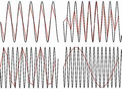
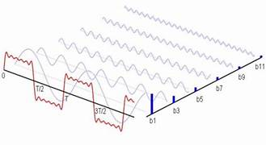

Proyecto Final: Sistema de Comunicación
1.1 Impacto de las Telecomunicaciones

Las telecomunicaciones han tenido un impacto profundo en el desarrollo de la sociedad moderna, permitiendo la comunicación instantánea entre personas, empresas y gobiernos a nivel global. Gracias a ellas, se ha facilitado el intercambio de información, el comercio electrónico y la colaboración internacional.
En sectores como la educación y la salud, las telecomunicaciones han impulsado modalidades como la educación a distancia y la telemedicina. Sin embargo, también plantean retos relacionados con la seguridad de la información, la privacidad y la brecha digital.
1.2 Componentes del Sistema de Comunicación

Un sistema de comunicación está conformado por diversos componentes que trabajan de manera conjunta para permitir la transmisión eficiente de información desde un punto de origen hasta un destino final.
- Emisor: Genera y codifica el mensaje.
- Canal o medio: Transporta la señal.
- Receptor: Recibe y decodifica la información.
- Ruido: Interferencias que afectan la señal.
1.2.1 Códigos y Protocolos
Los códigos permiten representar la información de forma entendible para los sistemas, mientras que los protocolos establecen reglas para asegurar que la comunicación se realice de forma correcta y ordenada.
Algunos ejemplos de protocolos son TCP/IP, HTTP y FTP, los cuales son esenciales para el funcionamiento de Internet y las redes modernas.
1.3 Señales y Clasificación

Las señales representan la información que se transmite a través de un sistema de comunicación. Dependiendo de sus características, pueden clasificarse en diferentes tipos.
Las señales analógicas varían de forma continua, mientras que las digitales utilizan valores discretos. También pueden ser eléctricas u ópticas, dependiendo del medio de transmisión.
1.4 Modelo Matemático de una Señal
Para analizar una señal, se utilizan modelos matemáticos que permiten describir su comportamiento en el dominio del tiempo y la frecuencia. Estos modelos son fundamentales para el diseño de sistemas de comunicación eficientes.
1.4.1 Serie de Fourier
La serie de Fourier permite descomponer una señal periódica en una suma de funciones seno y coseno. Esto facilita el análisis de señales complejas y su aplicación en procesos como modulación y filtrado.
Bibliografía General
- Stallings, W. Comunicaciones y Redes de Computadores.
- Haykin, S. Sistemas de Comunicación.
- Forouzan, B. Data Communications and Networking.